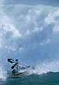

|
Reports on kayak and backpack trips, and photography shoots. |

WILD SIDE EASY, take II5/22-6/10, 2003.
Aboard the kayak mothership , we
traveled to the remote wild west side of Chichagof and Yakobi, and Lituya Bay, paddling protected bays. Then for
an encore, we scored great light on tidewater glaciers in Tracy Arm, and
floated amoung humpback whales in the thick of a herring run.
Call it
. . .
|

2003 SANTA CRUZ KAYAK SURF FESTIVALA series of storms blew in with the March 14-16, 2003, .
It was "epic".
|

SUN RIVER, ORAugust, 2002. On vacation in Sun River, OR, we visit a number of local .
Our criteria is: (1) does it have a stunning mountain backdrop, and (2) is it a day trip for kayak or canoe.
|
See more "In the Field", at In The Field Archives . . .
|
|
 |
|